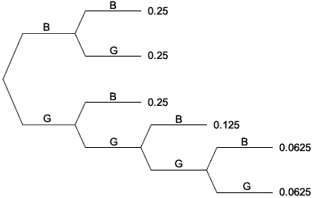

Independence for random variables
We earlier defined independence of two events, A and B, to be when
\[P(A \textbf{ and } B) = P(A) \times P(B) \]We now use this definition to define independence of two random variables, X and Y.
Definition
Two random variables, \(X\) and \(Y\), are independent if all events about the value of \(X\) are independent of all events about the value of \(Y\).
This definition of independence can be simplified considerably for discrete random variables. It is stated here without proof.
Independence of discrete random variables
Two discrete random variables, \(X\), and \(Y\), are independent if and only if
\[ P(X = x \textbf{ and } Y = y) \; = \; P(X=x) \times P(Y=y) \qquad \text{ for all } x \text{ and } y \]Proving independence
In many scenarios, we can argue that variables should be independent because of the way that the experiment was conducted. For example,
In other situations, independence must be checked using the definition before we can be sure that two variables are independent.
Example
A couple want at least two children, but will stop when they either have four children or get a boy, and the probability of each child being a girl is \(\frac {1} {2} \), independently of the genders of previous children.
Are the family size, X, and the number of girls, Y, independent?
The tree diagram below shows the possible sequences of births and their probabilities.

From it, we can see that the probability of no girls is
\[ P(Y = 0) = 0.25 \]and the probability that the family size is three is
\[ P(X = 3) = 0.125 \]However the probability that the family size is three and there are no girls is zero since that combination is impossible. Since
\[ P(X = 3 \textbf{ and } Y = 0) \; \ne \; P(X=3) \times P(Y=0) \]the two variables are not independent.
To prove independence, it is necessary to show that all combinations of x and y satisfy the relationship, but it is only necessary to find a single combination that does not work to prove that X and Y are not independent.
Notation
When dealing with two or more random variables, we often use subscripts to distinguish between their probability functions,
\[ p_X(x) = P(X = x) \qquad \text{ and } \qquad p_Y(y) = P(Y = y) \]Two subscripts are used when referring to the joint probabilities for the two variables,
\[ p_{X,Y}(x, y) = P(X = x \textbf{ and } Y = y) \]Discrete random variables \(X\) and \(Y\) are therefore independent when
\[ p_{X,Y}(x, y) = p_X(x) \times p_Y(y) \qquad \text{ for all } x \text{ and } y \]